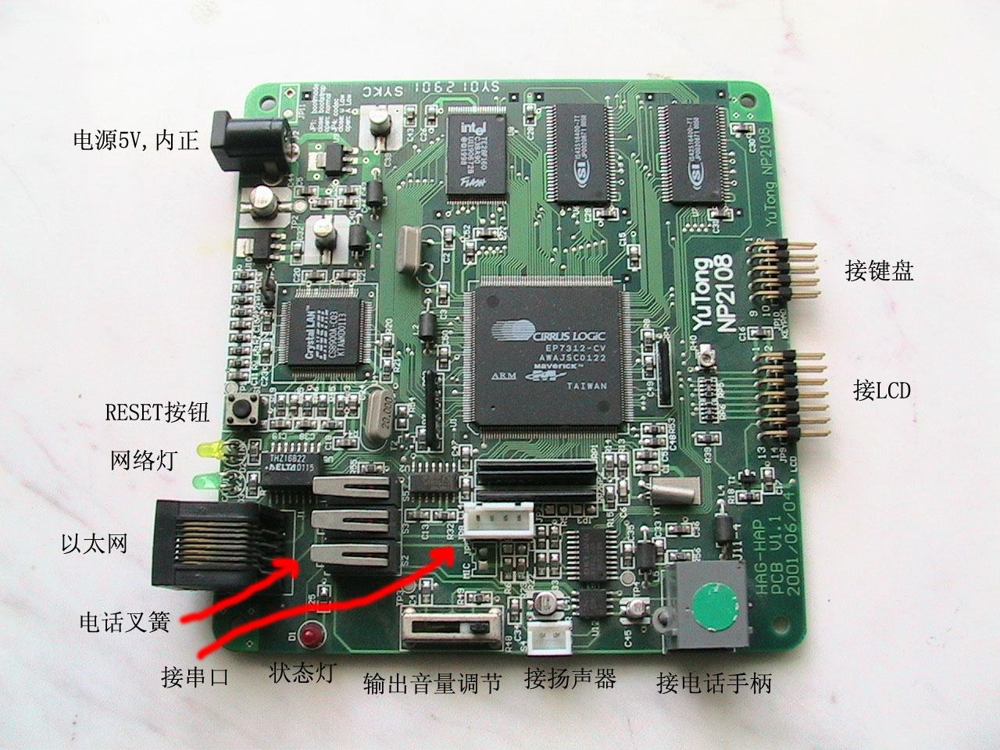

 2108是2001年为某公司开发的VoIP电话机的主板。它采用Cirrus Logic 的EP7312为CPU，具有2MB或4MB的flash，16MB的SDRAM，一个10M的以太网口，G.711的音频编解码器和音频功放， 可以接一个16x2的字符LCD和一个4x4的电话机键盘矩阵，板上还有一个电话机的叉簧开关。 详情
2108上电以后，flash里的bootloader启动，把flash里的linux的kernel的压缩包解开释放到SDRAM中， 再把flash里的ram disk的包解开到SDRAM中，最后启动Linux。整个过程大约需要90秒。
如果启动的过程中你能看见板子，你会在启动结束后，看见板上一个红色的LED开始闪烁。如果启动的过程中你接了串口线到你的PC， 你可以用minicom或超级终端等工具看到启动时的所有debug输出。
2108上的Linux在启动的时候检测网线，如果发现网线没有联接，就不会装载网络模块。所以如果希望使用网络， 必须在上电启动前接好网络。
启动后，有两种办法访问2108：串口或telnet。2108起来后，在串口上开了一个9600，8，N，1的终端，可以直接登录。 串口登录上去时，会看到如下登录界面：
Kernel 2.4.3-rmk1 on an armv4l如果没有做过其它配置，2108里面只有一个用户root，并且没有密码（密码为回车）。
ARMLinux login:当然也可以通过网络telnet到2108，telnet上去后，会看到如下登录界面：
ARMLinux如果忘记了原先设置的IP地址，就只能通过串口登录来查看和修改IP地址，或者用Sniffer一类的网络工具来推测板子的IP地址。
Linux 2.4.3-rmk1-wk1 on EP7312
ARMLinux login:登录上去后，Linux常用的命令如cd, ls, df, mount等都可以使用，也可以使用ifconfig, ping等网络命令。
修改IP地址
如果只是一次性临时改ip地址，可以直接使用Linux的ifconfig来改变eth0的地址，如
ifconfig eth0 192.168.1.22如果需要每次启动板子都在新的ip地址，cd到/etc/rc.d，用ae编辑rc.local文件。ae是一个全屏幕编辑器， 进去以后可以按F1来得到帮助。rc.local中有几行用来设置板子的IP地址、网关等，如下:
ifconfig eth0 10.214.32.160 netmask 255.255.255.0修改这些数据，保存文件。然后cd到/，你会看见有一个easysave.tgz文件。先用
route add default gw 10.214.32.1看看里面有哪些文件。然后用tar vf easysave.tgz产生新的easysave.tgz。要注意的是制作这个tgz时必须手工把所有原先在里面的文件都加进去。接着用tar cf easysave.tgz /etc/rc.d/rc.local ...安装flash的驱动程序。用insmod /lib/modules/flash.o把/easysave.tgz写入flash。最后用easysave w把flash驱动程序卸载掉。这样，下次重新上电启动板子时，就会设置成新的ip地址了。rmmod flash如何为2108编程
准备编程环境
2108上跑的OS是Linux，kernel版本是2.4.3，经rmk和wk修改。为了编写在2108上运行的程序，需要准备一台运行Linux的PC， 并通过以太网将PC和2108联在一起。在PC的Linux上需要做以下准备工作：
- 安装arm-linux-gcc。首先下载arm交叉编译器arm-linux.tgz到PC， 在PC的/usr/local下解开，在PC的/etc/profile里做上/usr/local/arm-linux/bin在PATH里就可以用了。 对应GNU的编译指令，在前面加arm-linux-就可以，比如arm-linux-gcc就是C的编译器。
- 配置PC的nfs服务。下载exports.tgz，这是nfs共享给2108nt用的卷，里面有一些没放在板上的可执行程序和库。 在PC的/usr/下解开，就有了/etc/exports/usr/目录。在PC的/etc/hosts文件中，给你的2108板起个机器名，如：
给ip地址为192.168.1.22的机器起了个名字为arm73。 然后在/etc/exports文件中， 加上这个机器名对/etc/exports/usr/目录的读写权利，如：192.168.1.22 arm73 arm73.zju.edu.cn arm73给名字为arm73的机器开放了/usr/exports/usr目录的读写权利。/usr/exports/usr arm73(rw,no_root_squash)- 配置2108的nfs mount。在2108的/etc/hosts中，同上一样加入你的PC的机器名和地址。在2108的/etc/rc.d/rc.nfs中，修改
中的guanguan为你的PC的机器名，/usr/exports/usr/为你的PC上exports的路径。然后修改2108的/etc/rc.d/rc.local， 去掉调用rc.nfs前的#。最后不要忘记把/etc/rc.d/rc.local, /etc/rc.d/rc.nfs和/etc/hosts都加入/easysave.tgz，并写入flash。 否则下次启动，还得再折腾一次。mount guanguan:/usr/exports/usr/ /usr/local -o nolock- 以上步骤完成后，在你的PC上的/usr/exports/目录，就是你的2108上的/usr/local/目录。你可以在PC上编辑、编译程序， 将编译后的可执行文件，拷贝到/usr/exports/下，就可以在2108上的/usr/local/找到这个可执行文件，并运行了。
写程序
2108上跑的是一个完整的Linux，所以你就像在PC的Linux上一样地写程序，一样地#include各种需要的头文件。 唯一的区别就是编译命令是arm-linux-gcc，编译的结果只能在2108上运行。2108上可以使用TCP/IP网络，也可以使用pThread线程库。板上设备
板上的设备是指lcd、键盘、叉簧开关和音频编解码器。我为这些设备开发了相应了的驱动程序，/dev/下的文件和对应的驱动程序如下：
设备 设备文件 驱动程序 说明 LCD /dev/lcd /lib/modules/lcd.o 直接写文本信息到这个文件,就可以在LCD上输出文字。回车会换车，能自动卷屏，支持以下esc字符：
01：清屏，02：光标回到行首
使用magic number为0x21400599的ioctl来开关背光LCD /dev/lcd /lib/modules/lcdalt.o 这是一个alternative的LCD驱动，它只能用来点亮LCD的背光灯，而不能输出文字 键盘 /dev/keypad /lib/modules/keypad.o 直接读这个文件,就可以读到用户在键盘上按的键 叉簧开关 /dev/hook /lib/modules/hook.o 读（read）这个文件，返回非0表示摘机 音频编解码器 /dev/codec /lib/modules/codec.o 从这个文件读，就可以读到音频输入口编码产生的G.711的码流；向这个文件写G.711的码流，就可以在扬声器听到声音 如何“烧“程序到2108的flash
小程序的烧法
2108的Linux开了一个4MB的ramdisk，必须的东西装完后，还剩下872kB左右的空间。如果你的程序的可执行文件所占据的空间很小， 小于16kB，可以利用easysave把你的可执行文件写入特殊的配置flash区。这个区的空间为16kB。考虑到还要保存一些配置文件， 你的程序要比较小才行。easysave是一个程序，命令行参数为w运行时，它将/easysave.tgz整个保存在flash一片特殊的空间中，这片空间的大小为16kB。 而不带命令行参数运行easysave时，它将那块flash空间的内容读出，保存为/easysave.tgz。 在/etc/rc.d/rc.local中，有如下三行：
easysave因此板子上电启动时，会读出那块flash，并解开tgz文件，也就是用保存在easysave空间里的文件覆盖了原来RAM disk里的文件， 从而实现了配置文件的配置。
cd /
tar xf easysave.tgzeasysave的源代码可以下载。
烧录整个flash
当作了比较多的改动后，或者ip地址等配置比较固定以后，可以整个地烧写flash，以减少easysave的存储量。 首先下载ramdisk.gz和Image.gz。在PC上将ramdisk.gz解开：gzip -d ramdisk mount ramdisk mnt -o loop这里mnt是你在当前目录下建的一个空目录的名字，用来挂这个卷。然后就可以cd进去修改， cd进去你就会看见与2108板上完全一样的目录结构。改完后退回到mnt的上层目录，umount mnt gzip ramdisk cat Image.gz ramdisk.gz >dl.bin假设你的nfs在PC上的/usr/exports/usr：然后，在板上cp dl.bin /usr/exports/usrinsmod /lib/modules/flash.o假设你把nfs mount在/usr/local：cd /usr/local ./burn ./dl.bin然后等到burn结束，就可以拔掉电源再启动板子了。burn程序的源代码可以下载。
如何制作一个2108的flash
如果不慎把板子上的flash写乱了，或者一块新焊好的板子需要写flash，就需要用到以下的工具和步骤：
- 断电，在板上唯一一个跳线端子上插入一个跳线块。用串口和网线连接2108和PC，最好用直连的网线单独连接2108和PC， 或者把他们俩单独放在一个不与外界联接的交换机上。在PC上执行
然后给板子上电。shoehorn将一个很小的ramloader.bin 写入2108片内的RAM，并启动那个程序。./shoehorn --terminal download -i=/etc/motd -k=./ramloader.bin- 在PC上执行
这里hermit会通过串口与板上的 ramloader 程序通信，并通过网络将 dl.bin 写入 flash。 dl.bin就是你所作的cat Image.gz ramdisk.gz >dl.bin的dl.bin。hermit download -e --remote-mac 12:34:56:78:9a:bc -i dl.bin -a 0x10000- 在PC上执行
这句把voip.conf写入到flash里去。voip.conf的内容如下：./hermit download --force-locked -i ./voip.conf -a 0xe000其中前面的17个字节是MAC地址，每次写不同的板子必须改变这个MAC地址，否则将来这些板子不能在同一个网段内工作。0e:6b:9a:66:32:0d#8209#b1#210.32.132.1#210.32.132.254#210.32.132.213#255.255.255.0#202.96.96.68#00#IT123456#- 最后在PC上执行
把autoloader.bin写入 flash 的启动区。然后断电，拔掉跳线块，重起板子，就能进入你的 Linux 了。 如果希望下次启动板子时不要自动启动 Linux，而是进入 hermit 的调试模式，可以将上面的 autoloader.bin 换成 manloader.bin。./hermit download -e --remote-mac 12:34:56:78:9a:bc --force-locked -i autoloader.bin -a 0x0
{kind=link}